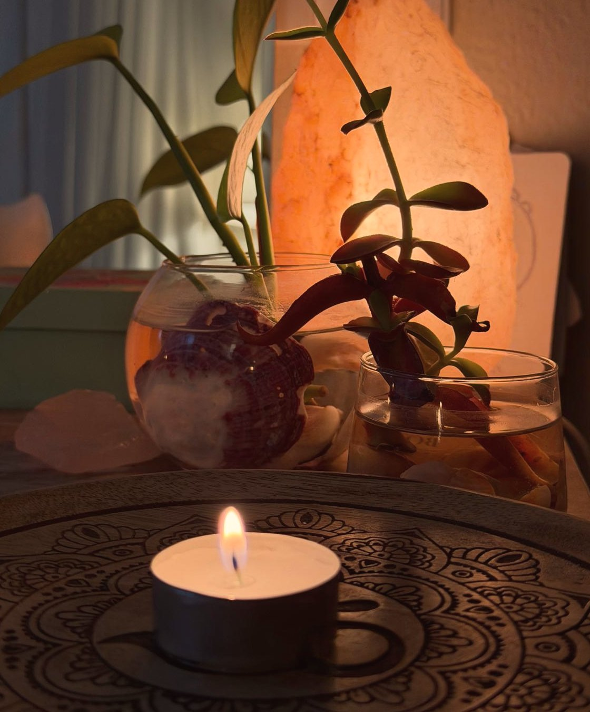
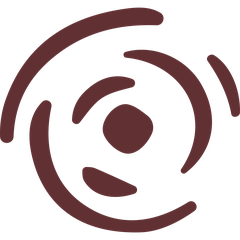
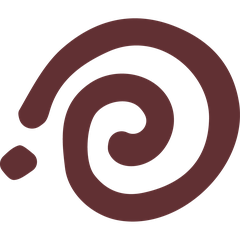
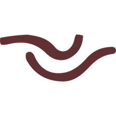
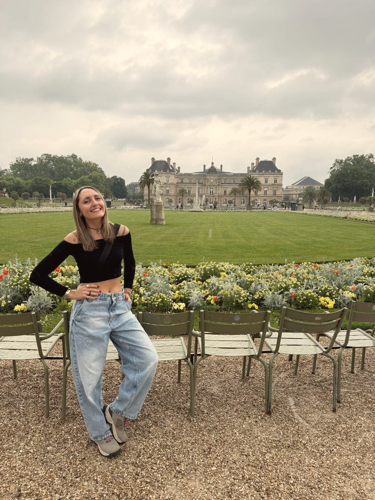

Somos la energía sabia que sana
Infinita Gratitud acompaña a hacer consciente tu energía y tu cuerpo, para conectar con tu misión a través del autoconocimiento y usar esa energía a tu favor.
Ver servicios
Un camino de regreso
Infinita Gratitud es un lugar de contención y acompañamiento terapéutico.
Un espacio que se abre cada vez que elegís mirar hacia adentro, y que sostiene tu proceso desde donde estés, en el momento en que te encuentres.
Desde la conciencia de tu energía y de tu cuerpo, te acompaño a conectar con tu ser, con tu autenticidad y con tu misión, a través de diferentes terapias.
Es un camino para escucharte, para darte lugar a sentir y para recordar lo que tu alma vino a ser. Un regreso a lo que siempre estuvo en vos, a tu propio ritmo, con amor y con respeto por tu historia.



Terapias para acompañarte
Las sesiones son online, para que puedas recibirlas desde donde estés. Si sentís el llamado pero no sabés por dónde empezar, escribime.
Escribime y coordinamos tu sesión
Contame qué estás buscando por WhatsApp y vemos juntos/as cuál es la terapia y el horario que mejor te acompañan. No hace falta que sepas por dónde empezar.
Escribime por WhatsApp
Soy Carla
Cada terapia que ofrezco la experimenté primero en mí. Las atravesé, las integré a mi vida cotidiana y hoy son herramientas que me sostienen.
Elijo compartirlas desde un lugar profundo y genuino.
Mi camino empezó escuchándome. Ahí descubrí que el cuerpo guarda mucho de lo que sentimos, y esa búsqueda me llevó al Reiki y a los Registros Akáshicos.
Con el tiempo, también llegaron terapias que canalicé junto a mis guías espirituales. Todo eso es lo que hoy forma parte de Infinita Gratitud.